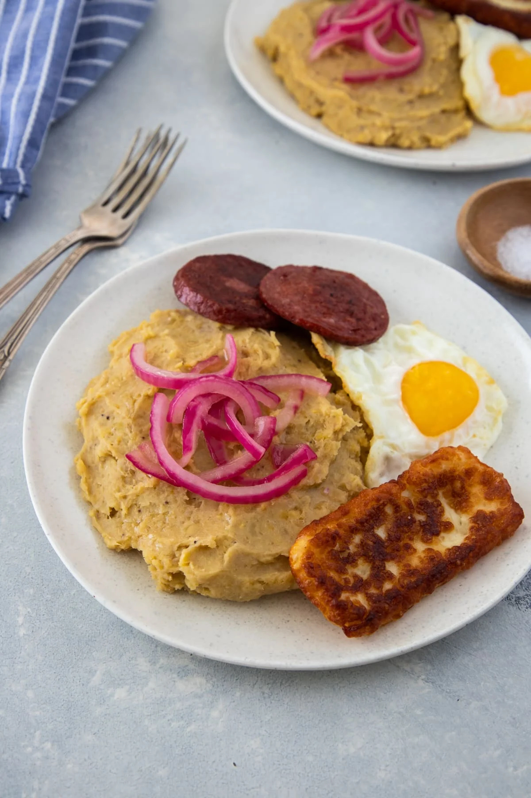

Mangu

Description
Mangu is a traditional dominican dish made from green plantains. This savory dish pairs well with eggs, fried cheese, and meat.
Ingredients
- Green plantains
- Butter
- Salt
- Red onions
- Olive oil
- Vinegar
- Water
Steps
- Bring water to a boil over medium high heat
- Peel the plantains and cut into 4-5 pieces (click here to learn how to peel plantains)
- Add plantains to the boiling water and add salt to water.
- Boil until very tender. If you poke a slice with a fork, and it slowly slides off the fork then it is ready. If you like a more mushy texture, leave boiling for an extra minute or two